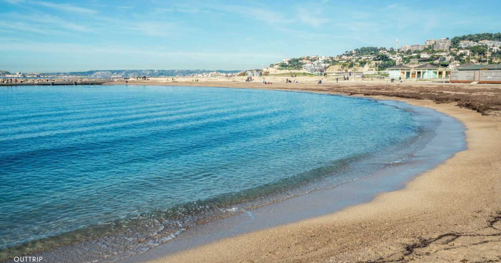

Description
La Plage du Prado est l'une des plages les plus populaires de Marseille. Elle offre une vue magnifique sur la mer Méditerranée et est idéale pour se détendre au soleil.
Activités
- Baignade
- Beach-volley
- Promenade en bord de mer
Commodités
- Restaurants
- Toilettes
- Poste de secours
Description
La Plage de Borely à Marseille, un havre de détente en bord de mer avec son sable doré, ses eaux cristallines, et des installations modernes pour une expérience balnéaire parfaite. Profitez du soleil, de la baignade rafraîchissante, et des activités variées dans un cadre pittoresque.

Activités
- Baignade
- Paddle
- Beach-volley
Commodités
- Restaurants
- Douches
- Location de parasols